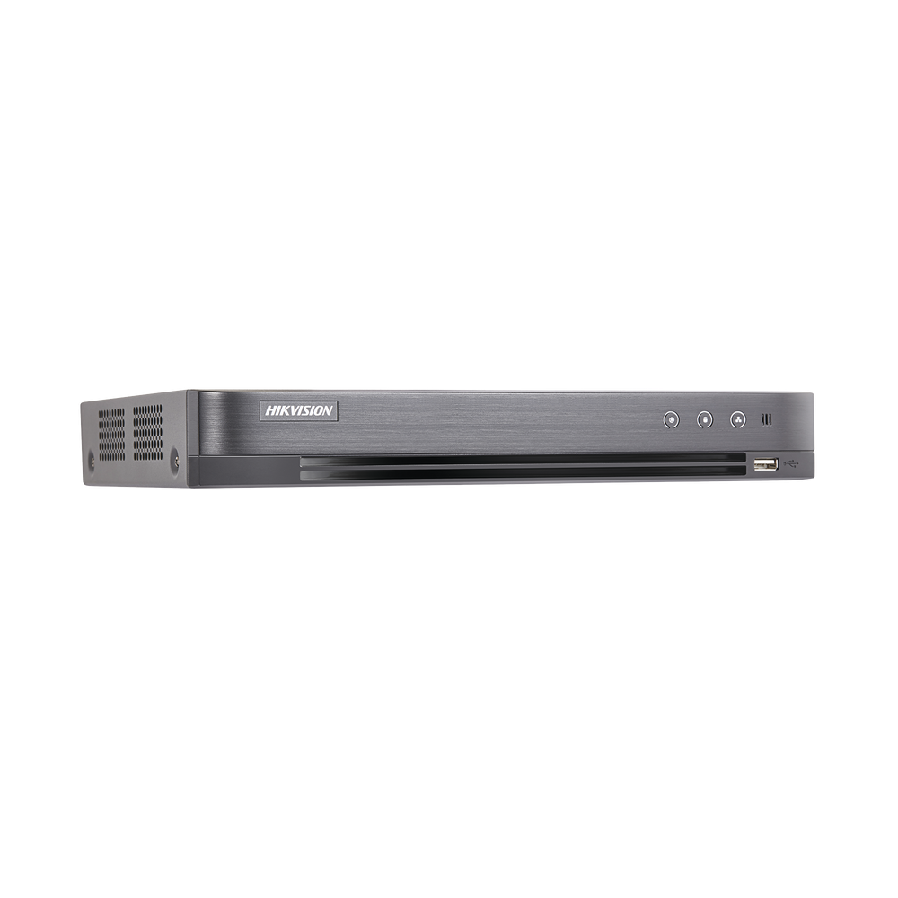

DVR 4 Megapíxel / 4 Canales TURBOHD + 2 Canales IP / 1 Bahía de Disco Duro / 1 Canal de Audio / Audio por coaxitron / Vídeoanálisis

$1864.82
Características Principales:
Permite apagar canales analógicos TURBOHD y poder colocar cámaras IP en todos sus canales, podemos colocar hasta 6 cámaras IP en total.
Grabador PENTAHÍBRIDO: HD-TVI / HD-CVI / Analógico / IP / AHD.
Software cliente multi sitio de hasta 64 canales (iVMS-4200).
Compatible con Hik-Connect P2P / DynDNS / No-IP.
Funciones Avanzadas: Detección por cruce de línea & detección de intrusión.